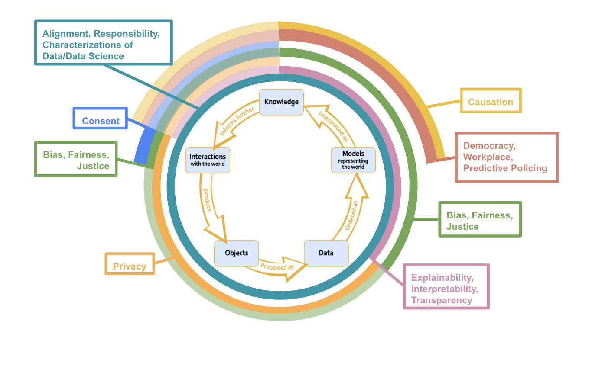

The Data Science Ethics Lifecycle
aligning the most common data science ethics syllabi topics to the data science lifecycle
1 Common Syllabi Topics
‘Most Common’ = has a count of 3 or more
Most Common Syllabi Topics Arranged in Descending Order by Count
2 Connections to the Data Science Lifecycle
The rings with less opacity denote areas where there seems to be substantial overlap between common topics and the data science stage though these considerations are not “paradigmatic” ethical issues.

3 Lifecycle Connections
This section is meant to give some brief justifications for my placement of the most common syllabi topics on the data science lifecycle in the diagram above. As with most topics in both data science and ethics, there is so much nuance that I cannot possibly capture in a few paragraphs. I recommend going through the readings linked below to understand more intricacies and applications of the connections between data science practices and the ethical issues that I begin to explicate below.
3.1 Consent
Generally, when people think about consent in data science, they think about it in data collection. That is, did the researchers or business have informed consent when collecting people’s data? Usually, when researchers or companies get permission to collect people’s data, they also ask for consent to use the data in a specific capacity later in the lifecycle (e.g., to build models, be placed in a database, sell to another company, etc.).
Yet, an agent must also consent to have the knowledge interpreted from a data model applied to them, even if none of their data was collected for the model building. For example, imagine that a company creates a data model that predicts that people who watch a certain television show are more likely to vote for a particular presidential candidate based on previously observed cases. A person begins watching the television show, and none of their information was used in building the predictive data model. Still, it seems crucial to consider if the person gave informed consent to have the model make predictions about them and their likelihood of voting for a particular presidential candidate.
3.2 Privacy
In 2016, university researchers published personal data from the OkCupid dating site to an open data repository. This data revealed intimate details about over 70,000 users, including usernames, sexual preferences, and personal opinions. A scholar at Carnegie Mellon University said about 30% of these profiles were directly identifiable, meaning their OkCupid profile data could be connected to their real name, causing international outrage (Woollacott, 2016). The OkCupid case study underscores why data science ethics courses heavily emphasize privacy’s importance. Data science often requires massive amounts of data and, as aforementioned, informed consent to be collected. Intuitively, it is unethical for personal data that people usually consented to be used by a particular entity for a specific purpose to be available to other entities, especially when the available data is identifiable (i.e., traceable back to them).
Therefore, privacy is central to interactions with the world that lead to data collection, processing, and data storage, especially when the information collected is personal. Usually, data is aggregated and thus anonymized to develop a model, so there are typically no concerns about the model or its predictions exposing personal information.
When knowledge inferred from a data model informs further interactions with the world, worries about privacy resurface. For instance, imagine a data model by one company predicts that you are unqualified for a job. It would be unethical for this prediction to be shared with every other company you applied to or for your prediction to be given to career development companies to target course advertisements toward you. Hence, just like personal data, it seems like people have a right to keep model predictions about them private.
3.3 Explainability, Interpretability, Transparency
A common complaint about data science models, particularly more advanced ones, is that they are black boxes. Explainability, interpretability, and transparency all describe similar desires for data science technologies to be more understandable to humans, particularly the technology’s stakeholders. People usually demand that data science technologies are comprehensible to humans at the deployment stage, where predictions about individuals or groups are made. For example, if an inmate’s bail is set higher than they think it should be because an algorithm recommended the higher bail amount, it seems highly likely that the inmate would be upset. Some would argue that the inmate’s upsetness is partly because they have a right to an explanation.
The “right to an explanation” argument extends to future interactions with our world. Imagine law enforcement starts over-policing neighborhood A relative to neighborhood B because people in neighborhood A tend to have higher bail amounts than people in neighborhood B. It seems that the people in neighborhood A have a right to know why they are being over-policed relative to the people in neighborhood B.
Like many data science ethics terms, what exactly explainability, interpretability, and transparency require is an open question. It does not seem sufficient to publish the model’s code because this does not tell us why the model made the decision it did on a particular person. Simultaneously, more advanced data science models can use millions of hyper-parameters to make predictions. So, we cannot point to a single variable and say that it caused the algorithm to predict class X over class Y for Individual I.
3.4 Democracy, Workplace, Predictive Policing
Democracy, workplace, and predictive policing are settings where data science practices have exceptionally high moral stakes. As such, case studies from democracy, workplace, or predictive policing settings are routinely used in data science ethics classes to underscore how pernicious data science’s moral harms can be. Usually, when case studies are referenced, it concerns deploying predictive models in these settings. The COMPAS algorithm, which predicted an inmate’s risk of being reconvicted to determine their sentence length, is a well-known example of an algorithm that was scrutinized for being deployed in courtrooms, given that it predicted a higher proportion of false high-risk appraisals for Black defendants than White defendants (Julia Angwin, 2016).
Furthermore, these predictions can lead to morally problematic interactions with the world. For instance, suppose that law enforcement starts over-policing a predominantly Black neighborhood because a recidivism algorithm predicted that people from that neighborhood are more likely to be reconvicted of a crime. Yet, the recidivism algorithm was trained on historical data riddled with racial biases. Over-policing that neighborhood could lead to specific populations being wrongfully convicted or more likely to be convicted solely because of their demographic characteristics – both of which are intuitively morally problematic.
Interestingly, even though there is a high likelihood of immoral outcomes of deploying predictive models in democracy, workplace, and predictive policing settings, creating these predictive models is not intuitively morally problematic in itself. Imagine that a civil rights group develops an algorithm to predict a person’s likelihood of being reconvicted to show that the criminal justice system is racially biased, which intuitively, does not seem morally troublesome. Though, if the recidivism algorithm is deployed, meaning it influences people’s beliefs about a person’s reconviction risk, does it become morally pernicious.
3.5 Causation
Probably the most-known lesson in statistics is that “correlation does not imply causation”. This lesson becomes especially poignant when a model representing the world is interpreted as knowledge. At least currently, most models only identify correlations between the predictor variables and the response variable, not causation (there is also centuries worth of philosophical debates about how to define causation). Interpreting correlative relationships as causal can have significant moral repercussions. For instance, suppose we have a logistic model that predicts whether a person will drop out of high school. Our model has a positive correlation between having Spanish as your first language and your expected probability of dropping out (i.e., if your first language is Spanish, you are expected to have a higher chance of dropping out of high school, holding all other variables constant). Clearly, several confounding variables, such as socioeconomic status and available academic opportunities, lead to the positive relationship we found. But, suppose that someone took our model and, from it, declared that having Spanish as your first language causes a higher probability of dropping out of high school. They might conclude that people whose first language is Spanish are less intelligent or lazier in school than those whose first language is not Spanish, leading to racist beliefs and actions that morally harm people whose first language is Spanish. Therefore, several data science ethics classes focus on causation at the knowledge-interpretation stage and, specifically, how it is dangerous to interpret causal relationships from most data models.
There can also be ethical repercussions of false causal relationships between predictors and the response variable in informing future interactions with the world. Imagine biologists theorize that native Spanish speakers are naturally less intelligent than native English speakers and use false causal claims they took from our model to justify data collection. Thus, ethical worries related to causation span not just what we should interpret as knowledge from a data model but also what sorts of interactions with the world are can be justified on the basis of previously interpreted knowledge.
3.6 Bias, Fairness, Justice
Bias, fairness, and justice are all fundamental topics in data science ethics. Ongoing philosophical work is committed to defining bias, fairness, and justice and their relationship to one another. As such, I will not attempt to define nor explain the relationship between bias, fairness, and justice in this short connection paragraph. Even without definitions, though, there are intuitive cases of biased, unfair, and unjust data science practices and models. For instance, consider the COMPAS algorithm: a data model that predicted the risk of recidivism had higher rates of false “high risk” predictions for Black defendants than White defendants (Julia Angwin, 2016). Intuitively, COMPAS’ predictions are biased against Black people, and similarly, it would be unfair (and unjust) to decide a person’s parole or set their bail using COMPAS.
The COMPAS case study highlights why most data science ethics courses tend to focus on bias, fairness, and justice surrounding data models: primarily, what is input into them (i.e., the data) as well as what they output (i.e., their predictions) and how decision-makers use the model’s outputs. The saying “garbage in, garbage out” encapsulates the commonly-seen connection between bias, fairness, and justice and data modeling. “Garbage in, garbage out” indicates that if the data used to build the data model was biased against group X, then the model’s predictions would be biased against group X and could lead to unfair outcomes for group X. This explains why the opaque concentric circle for bias, fairness, and justice extends from “data” to “knowledge” in the data science lifecycle.
Another paradigmatic stage of the data science lifecycle where bias, fairness, and justice emerge is “interactions with the world”. Suppose a data scientist wants to model the average number of hours in the hospital after giving birth but only surveys white females. We would consequently consider the data set biased towards white women and be cautious about generalizing the data scientist’s findings to people who are not white women.
While there is a focus on bias, fairness, and justice in data modeling and interactions with the world, they are essential concepts to consider at every stage in the data science lifecycle. For example, we might drop observations with missing values when processing interactions as objects and then data. Yet, dropping those values can create biases in our data and subsequent analysis if they are not missing at random (example inspired by this paper). Bias, fairness, and justice can also come into play from “knowledge” to “interactions with our world”. For instance, it might be considered unjust or unfair to give nannying job ads to only women because an algorithm found that women were significantly more likely than men to click on a nannying ad (example inspired by this article).
Bias, Fairness, Justice Readings
3.7 Alignment, Responsibility, Characterizations of Data and Data Science
3.7.1 Alignment
Alignment refers to how our moral values align with our data science practices and technologies. We frequently consider alignment during the deployment stage, where our data model generates predictions about novel inputs. When seeing the outputs, it becomes salient if our moral values and data science practices are misaligned. Still, alignment comes into play throughout the lifecycle. We apply our moral values in interactions with our world (e.g., the moral requirement to get informed consent when collecting personal information). We use our moral values in data processing and cleaning when thinking about what to do with missing data, especially when it is not missing at random. Alignment also comes into play when developing data models. For instance, we use our moral values when deciding what fairness metric to use when evaluating our model’s performance and thereafter when thinking about how we apply the model outputs to inform future interactions with the world (e.g., see the privacy and consent sections above).
3.7.2 Responsibility
Here, I am focusing on moral rather than mere legal responsibility; an individual might be morally responsible for X, even if X is legal (e.g., cheating on a significant other). Moral responsibility comes up throughout the data science lifecycle. Most commonly, data science focuses on moral responsibility concerning model deployment and interactions with the world. For example, Amazon was seen as morally responsible for deploying a hiring algorithm that was biased against female applicants (Dastin, 2018). Moral responsibility also arises when building data models. It seems reasonable to contend that if another company made Amazon’s faulty hiring algorithm, it would also be morally responsible for the biased results – even if that company never deployed the model itself.
Moral responsibility is also crucial in interactions with the world. For instance, there are several case studies, data science, and beyond where people are morally responsible for failing to obtain informed consent when collecting personal information. Some examples include the Tuskegee Study or commercializing a social media user’s data without informed consent.
Though less commonly thought about, moral responsibility also influences the “interactions with the world” to “data” stages of the lifecycle. Specifically, it seems valid to hold data scientists morally responsible for how data is stored and cleaned. For example, if a data scientist stored personal data in a foreseeably faulty database, they would be at least partially morally responsible for any data leakages. Similarly, if data is publicized that is not adequately anonymized, the data scientist who was supposed to remove identifiers from the data would be at least partially morally responsible for any ethical repercussions that arose from the data not being adequately anonymized.
3.7.3 Characterizations of Data and Data Science
Finally, characterizations of data and data science affect how we conceive of the data science lifecycle in general and, in turn, influence each stage in the data science lifecycle (see the Data Science Lifecycle Page for more information).